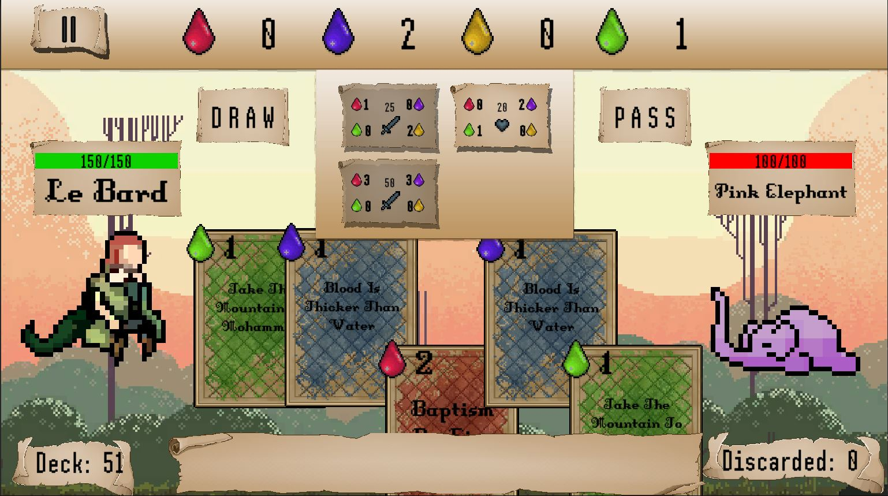

Quel cliché!
This game was created for and submitted to the GitHub Game Off Jam 2022.
The jam's theme was "cliché". Using this as inspiration, we created a whole card game filled with them: the hero is a bard who uses cliché quotes as cards that fuel his powers, which are also based on cliché expressions, that he uses to face his foes... which are also based on cliché sayings.
Co - creators:
Simonian (Pixel Art - Animation)
Build for Windows & WebGL
GitHub Repository